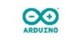
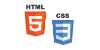
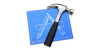

Website:www.ali-amin.com
Email:aliamin@outlook.com
About Me:
Hi I'm Ali. I hold a solution-focused approach to problem solving and can quickly learn any tools or languages needed to tackle the problem at hand. My education lies at the intersection of mechanical, electrical and software engineering and am drawn to meaningful problems that have the potential to have a significant impact. In addition to developing my technical skills, I hold leadership roles in various organizations and startups whose mission I identify with. I spend my free time keeping abreast with new innovations, tinkering with hardware and finding better ways of getting things done.
Alcatel-Lucent |
|
Jan - April 2013 | Ottawa, ON |
|
|---|---|
Designed a test system from scratch to verify design improvements on a FXO Voice Interface card for handling traffic over large cell networks. Developed a software driver for a voice call generator, and hardware modules to interface between test gear and the network card. This included adapting a new FPGA to an existing board and conducting power and thermal tests.
Facebook |
|
May - August 2012 | Menlo Park, CA |
|
|---|---|
Developed an automation framework using Python for remote analysis of power system designs and components. Analysed data sets using NumPy and matplotlib to determine THD, power quality, and system efficiency. Worked with scopes and power analyzers for hardware verification and designed circuit tests in Visio to facilitate vendor selection.
TCS |
|
May - August 2011 | Calgary, AB |
|
|---|---|
Conducted testing on the iPhone/Android mobile web, Android Hybrid, OnStar and the Family Locator 4.5x projects. Reviewed software life cycle deliverables, improved PRD documentation, optimized test cases and made reccomendations for UX and design improvements. Directed testing temporarily for the mobile web project in Calgary.
BambaRewards |
|
Jan 2012 - Present | Toronto, ON |
|
|---|---|
Built and managed the company's Facebook page and Twitter with relevant content and company updates. Assisted the founders to better connect with followers and executed our first fundraiser to raise over $1000. Established communication with the retailer network to issued press releases on the company website (SQL/PHP).
TEDxUW |
|
Sept - Dec 2012 | Waterloo, ON |
|
|---|---|
Part of the team responsible for planning and executing the 2012 TEDxUW conference. Developed the attendee application, organized timeline for the application process and approved suitable candidates. Assisted with logistics, flow and helped handle over 50 general volunteers on the day of the event.
La Petite Chef |
|
September 2009 - March 2010 | Calgary, AB |
|
|---|---|
Launched, operated and liquidated a company that designed a cooking kit for kids alongside 15 individuals. Contributed to all areas of company operation: product development, marketing and external relations. Was one of two teams selected to represent Canada at the North American Junior Achievement competition.
Arduino Robotics |
 |
March 2013 - Present |
|
|---|---|
Design and programmed an Alarm Clock using the Arduino UNO that synchronizes with system time and can be set to go off at a particular time.
Web Development |
 |
Jan - March 2013 |
|
|---|---|
Designed and built a responsive website to curate individual content. Used HTML, CSS and jQuery from the Bootstrap framework.
iOS Development |
 |
Jan 2013 - Present |
|
|---|---|
Working on the developement of a sensor-based iOS Application that assists users in meeting their fitness targets.
2012
2012
2011
2010
2010
2010
2009